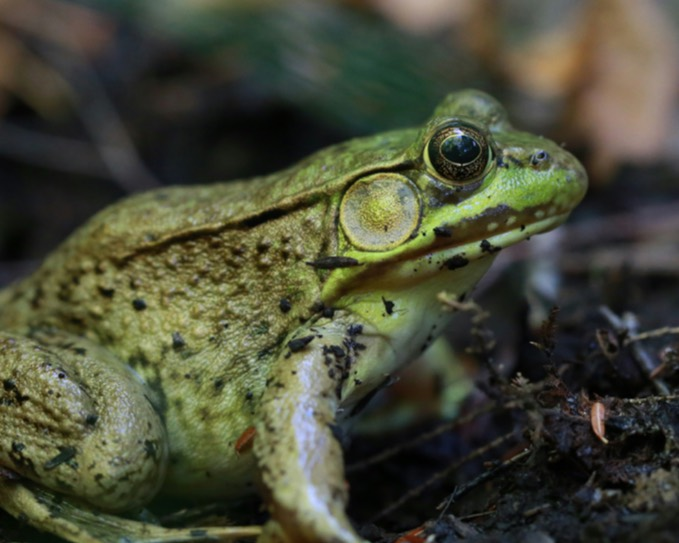

Verified Peer-Reviewed Papers (Profiled)
3
Dr Piet Malepa combines zoo observation, field data, and community science to turn biodiversity research into practical conservation action across habitats, species behavior, and ecosystem health.

Verified Peer-Reviewed Papers (Profiled)
3
Documented Outputs Linked
6
Primary Threatened Species Focus
1
Current Study Highlight
This active study tracks calling activity, breeding timing, and water quality while feeding a broader research program on habitat resilience and zoo ecosystem dynamics.

Selected Publications and Projects
Zoo Biology (2025): disturbance can trigger earlier hatching, but disturbed clutches showed lower 30-day survival, supporting low-disturbance handling protocols.
Read on PubMed ->Zoo Biology (2022): documents seven developmental stages under captive care and provides practical timing data for conservation breeding programs.
Read on PubMed ->African Biodiversity and Conservation (2025): reports multi-stakeholder progress and measurable outcomes for Pickersgill's reed frog conservation planning.
Open journal article ->Open to collaborative studies, student supervision, and conservation strategy with zoo teams, universities, and public-sector partners.